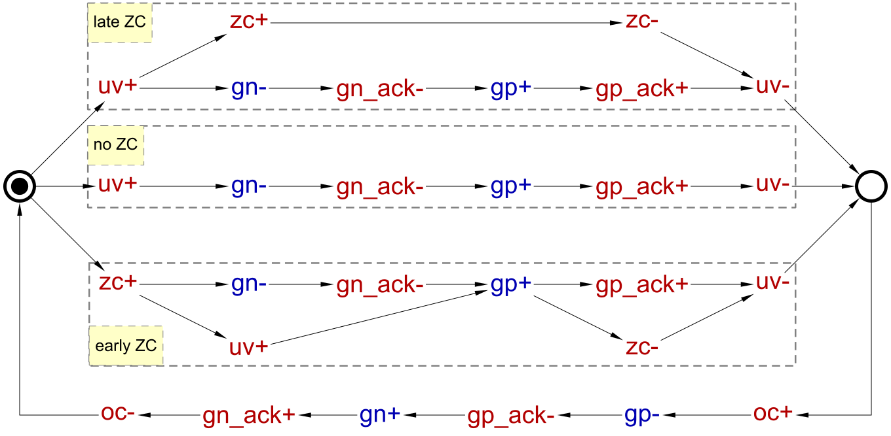
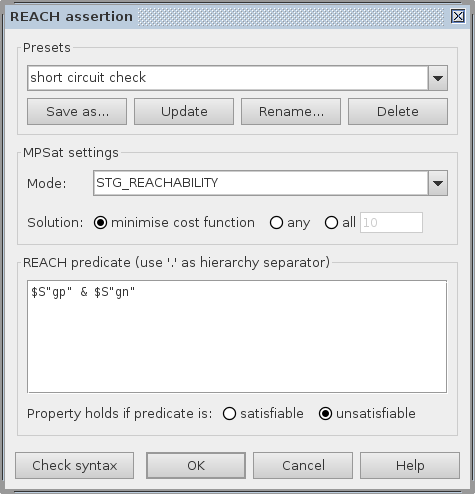

Table of Contents
Design of basic buck controller
Buck converter is a voltage step down and current step up converter. It comprises an analogue buck and its digital control logic as shown in the following diagram. Your task in this tutorial is to formally specify, synthesise and verify the control circuitry of the buck.

The controller switches the power regulating PMOS and NMOS transistors ON and OFF as a reaction to under-voltage (UV), over-current (OC) and zero-crossing (ZC) conditions. These conditions are detected and signalled by a set of specialised sensors implemented as comparators of measured current and voltage levels against some reference values (V_ref, I_max and I_0 respectively). Note that the gp and gn signals are buffered to drive the very large power regulating transistors (occupy more than 50% of the buck area) and their effect on the buck can be significantly delayed. Therefore, the controller is explicitly notified (by the gp_ack and gn_ack signals) when the power transistor threshold levels (Th_pmos and Th_nmos) are crossed.
The operation of a buck is usually specified in an intuitive, but rather informal way, e.g. by enumerating the possible sequences of detected conditions and describing the intended reaction to them, as in the following phase diagram.

This specification shows the alternation of the UV and OC conditions which are handled by switching the power regulating PMOS and NMOS transistors of the buck ON and OFF. Detection of the ZC condition after UV does not change this behaviour, however, if ZC is detected before UV then both the PMOS and NMOS transistors remain OFF until the UV event.
It is important to note that in order to avoid a short-circuit the PMOS and NMOS transistors of the buck must never be ON at the same time.
For simplicity, this design assumes that the UV condition is resolved within one cycle of charging. A more realistic buck design is described in the Hierarchical design of a realistic buck controller tutorial.
Exercise 1: Modelling
According to the phase diagram there are three distinctive scenarios to capture:
- no ZC – UV happens without ZC;
- late ZC – UV is followed by ZC;
- early ZC – UV happens after ZC.
Let us first capture the no ZC scenario as an STG.
The resulting STG listing the sequence of signal events for this scenario is shown in the following diagram. Save this model as buck-scenario1_no_zc.stg.work file.

The scenario for late ZC is formalised in a very similar way. Both phases of ZC just happen concurrently with switching NMOS transistor OFF and PMOS transistor ON. Save the no ZC model with new name buck-scenario2_late_zc.stg.work and modify it according to the late ZC scenario.
The resulting STG should look similar to the following diagram. Do not forget to save the work!

The scenario for early arrival of ZC is a bit different. Here the NMOS transistor needs to be switched OFF as soon as ZC is detected, without waiting for UV. However, switching the PMOS transistor ON is still delayed till UV condition.
Save the late ZC model under new name buck-scenario3_early_zc.stg.work and do the necessary changes for the early ZC scenario.
The modified STG should look similar to the following diagram.

In order to produce an implementation capable of handling all the scenarios, these STGs need to be merged into a single specification. One can see that all three STGs have ‘compatible’ initial states, that is all common input and output signals have the same initial values. Therefore one can merge the initially marked places in the three STGs and obtain a combined specification for buck control.
- Create a new STG work called buck-scenarios_merged.stg.work.
- Copy and paste the three scenarios into it.
- Select the three initially marked places (by holding Shift and clicking them with the mouse) and merge them into a single place using Transformations→Merge selected places.
The STG combining all three scenarios should look like the following diagram. Do not forget to save the work!

Note that this STG is non-deterministic, e.g. after uv+ fires the STG can end up in either of the two possible markings. Non-determinism is common in scenario-based modelling, and can be very powerful and expressive. Occasionally, the scenarios may impose conflicting requirements on the system: Two scenarios may have a common prefix, with one of them requiring and the other forbidding the circuit to produce a particular output after this prefix. Such conflicting requirements can be detected during verification – use Verification→Output determinacy [MPSat] menu item to check that in this model the scenarios are compatible. This property trivially holds for deterministic STGs, but if your STG has non-determinism due to dummies or non-deterministic choices then it is a good idea to verify output determinacy.
Simplification
Once the initially marked places are merged, one can notice that three transitions oc- leading to it can also be merged because their preceding states are ‘compatible’. This process continues with signal event gn_ack+, and so on, ‘zipping’ the common paths of the STGs together. The simplified STG specification of the buck control is as follows; save it as buck-simplified.stg.work file.

In the model above some of the transitions are grouped to improve the visual representation. It is important to use groups rather than pages for this – the use of pages will lead to errors during verification as pages create their own name spaces, so e.g. signal gn in one page and signal gn in another page (or not in any page) will be treated as different signals.
Note that this STG is just a cosmetic improvement over the previous one and so this step does not affect the verification and synthesis. However, it does improve the visual representation making the STG more comprehensible, and thus it is important from the designer's perspective.
It is possible to simplify the STG automatically, via the Conversion→Net synthesis [Petrify] or Conversion→Net synthesis [Petrify with -er option] menu items. However, the layout of the simplified STG is generated automatically, so the manual simplification is simpler for this example. However, in less trivial cases automatic simplification can be very useful.
Exercise 2: Validation and formal verification of specification
Validation
Activate the simulation tool ![[M] Simulate](../../../help/core/editor_tools-simulate.png "[M] Simulate") and exercise the obtained STG model. Click one of the enabled signal transitions (they are highlighted in orange) to evaluate the STG into the next state. Make sure the simulation traces correspond to those intended by the informal specification of the phase diagram.
and exercise the obtained STG model. Click one of the enabled signal transitions (they are highlighted in orange) to evaluate the STG into the next state. Make sure the simulation traces correspond to those intended by the informal specification of the phase diagram.
Formal verification
Standard properties
Before proceeding to the synthesis step verify that the STG specification satisfies the following Verification properties using Verification menu:
- Deadlock freeness – every reachable marking enables at least one transition.
- Consistency – the '+' and '-' transitions of every signal alternate in every execution, always starting with the same sign.
- Input properness – an input cannot be disabled by an output or internal signal, and cannot be triggered by an internal signal.
- Output persistency – an enabled output or internal signal cannot be disabled by any other signal.
- Output determinacy – the STG is not self-contradictory, i.e. one cannot find a pair of traces having a common prefix, with one of them requiring and the other forbidding to produce a particular output after this prefix; note that for non-deterministic STGs like this one this propery is essential.
These are basic soundness properties which should be satisfied by most models – Verification menu has an entry that can check all these properties with a single click.
Verification of handshakes
The pairs of signals gp / gp_ack and gn / gn_ack must follow the handshake protocol, and so these two handshakes must be verified as described in the Handshakes Verification tutorial. Note that these handshakes are active, as the controller initiates them.
Custom properties
Another property one must verify is that PMOS and NMOS transistors are never ON simultaneously (which would lead to a short-circuit), i.e. that signals gp and gn are never high at the same time. This custom property can be formulated as a reachability analysis problem using Reach language:
- Open the REACH assertion dialog by selecting Verification→REACH assertion [MPSat]… menu.
- In MPSat settings set the Mode into STG reachability analysis and the Solution into minimise cost function.
- Enter a Reach predicate specifying the short-circuit condition: both
gpandgnsignals are high –$S"gp" & $S"gn". Here"gp"and"gn"are the names of the signals, operatorSturns a string into a signal with that name, operator$gives the value of a signal in the state to be reached, and&is Boolean AND. - Select unsatisfiable to denote that the property holds if predicate is unsatisfiable.
- Save this property as a preset for future use, e.g. under the name short circuit check.
The whole REACH assertion dialog should look as follows.

When you click the OK button the STG will be searched for a state where the Reach predicate evaluates to True. If such a state exists then the Reach predicate is satisfiable and the property is violated; else the property holds. If the property is violated then a trace leading to a problematic state is reported. This trace can be simulated to diagnose the problem and correct it at the level of STG specification. The minimise cost function setting ensures that this violation trace is as short as possible, which helps debugging.
Note that the property that signals gp and gn are never high at the same time is not sufficient to guarantee the absence of short-circuits. Indeed, the PMOS and NMOS transistors are big and slow, and so if e.g. gp+ happens immediately after gn-, a transient short-circuit may be possible even though the property holds. In fact, the signals gp_ack and gn_ack were introduced specifically to detect the completion of the switching of the corresponding transistors, making it possible to avoid such short-circuits. Hence, a stronger correctness property ensuring that gp cannot be high whenever gn or gn_ack is high, and similarly gn cannot be high whenever gp or gp_ack is high, can be formulated as ($S"gp" | $S"gp_ack") & ($S"gn" | $S"gn_ack"), where | is Boolean OR. Verify that this stronger property also holds for the above STG model.
Exercise 3: Synthesis
The STG specification can now be synthesised into an asynchronous circuit implementation either with MPSat or Petrify back-end tools via Synthesis menu. For example, the following Petrify's complex-gate implementation can be obtained by choosing Synthesis→Complex gate [Petrify]:

Note that the solution is not unique and you may get a slightly different one. In particular, instead of the NOR gate Petrify is likely to output an AND gate with three input ‘bubbles’ – this can be fixed by right-clicking the gate and selecting Propagate inversion through gate from the popup menu. Save this circuit with the name buck-cg-petrify.circuit.work.
Workcraft can export circuits in the Verilog format via the File→Export→.v (Workcraft Verilog serialiser). Note that a complex-gate implementation is independent on the technology library, i.e. its gates are not mapped to any library gates.
Exercise 4: Validation and formal verification of implementation
Validation
Activate the simulation tool and simulate the captured complex gate implementation of the buck control. Ports, pins and wires are colour-coded: blue means low level and red means high level of the signal. Excited pins and ports are highlighted in orange.
Make sure that the initial values of all signals are as expected: gn and gn_ack must be high, and the other signals must be low. Incorrect initial values of signals is a very common problem in manually edited circuits!
Gate outputs normally should not be excited at the initial state, and at the STG level output and internal signals should normally not be enabled by the initial marking. The reason is that most asynchronous circuits produce outputs in response to input stimuli, and are otherwise quiescent. The exceptions are circuits like oscillators.
Note however that in some synthesis modes where signal insertion is required (e.g. CSC resolution or logic decomposition with technology mapping) some of the newly inserted signals can be initially enabled, and the corresponding gates initially excited. In such a case the designer can change the initial marking of the system by firing these signals, until a quiescent initial marking is reached – this is always possible provided the initial marking of the original STG was quiescent. Maybe, one day the tools will do that automatically…
Click an excited pin to toggle its logical value – the circuit will evaluate to the next state where new set of signals will be enabled. The sequence of signal events is recorded in the simulation trace and can be subsequently replayed for analysing the circuit's behaviour.
During simulation the user is not bound by the contract specified by the original STG: The input ports are always excited and one can produce an input that would not be permitted by the STG. Hence the circuit may exhibit non-persistent behaviour and other problems that cannot occur in a correct environment. This is intentional, i.e. not a bug but a feature!
Formal verification
For the formal verification the behaviour of the environment must be specified. For a circuit synthesised by Workcraft from an STG this STG is automatically set as the environment. This can be checked (and changed if necessary) by activating the selection tool ![[S] Select](../../../help/core/editor_tools-select.png "[S] Select") , making sure that nothing is selected, and inspecting the Environment property in the Property editor. If the file does not exist then its name is shown in red.
, making sure that nothing is selected, and inspecting the Environment property in the Property editor. If the file does not exist then its name is shown in red.
Verify that the circuit conforms to the environment specification, is free from deadlocks and output persistent. All these verification steps can be run via Verification→Conformation, deadlock freeness, output persistency (reuse unfolding) [MPSat] menu.
In theory, synthesised circuits are correct-by-construction. In practice, the synthesis tools are very complicated and may have bugs, so formally verifying the circuits is essential. This is especially true if the circuit was edited manually.
Exercise 5: Alternative implementations (optional)
When synthesising a complex-gate implementation with MPSat (via Complex gate [MPSat] menu) the circuit looks as follows (after some manual editing):

Note that the gate computing gp now has feedback, which suggests that it may be advantageous to implement gp by a latch (i.e. a state-holding element) rather than a combinational gate. Below we explore some such implementations.
Standard-C implementation
The standard-C architecture (a.k.a. “monotonic covers”) is shown in the picture below. It uses a C-element as the state-holding element that is driven by two combinational gates computing the Set and (inverted) Reset functions of the implemented signal. The Set and Reset functions are mutually exclusive, i.e. they are never 1 at the same time; hence, due to the Reset function being inverted, the inputs of the C-element cannot be 10 (combinations 00, 01, and 11 are possible).

The standard-C implementation of the buck STG can be synthesised using Synthesis→Standard C-element [MPSat] menu. By inspecting the resulting circuit (not shown) one can see that:
- There is no benefit in implementing
gnusing standard-C architecture, as the original complex-gate implementation is simpler. (In some situations, e.g. if there are only 2-input gates/latches in the gate library, this standard-C implementation may come useful.) - The standard-C implementation of
gpis nicer than the complex-gate one, in particular it does away with that ugly 4-input gate that may be absent from the gate library.
By selecting the complex-gate implementation of gn and the standard-C one of gp the following hybrid circuit is obtained:

This circuit was obtained by synthesising both complex-gate and standard-C implementations in Workcraft, and then combining them (by copying and pasting the gate implementing gn and manual editing).
Do not forget to verify this circuit w.r.t. the original STG as described above for the complex-gate implementation!
Logic decomposition and technology mapping
Complex-gate and standard-C syntheses are oblivious to the gate library – the implementations they yield are Boolean functions of arbitrary complexity. These functions are often too large to be implemented by a single gate available in the gate library. Unfortunately, breaking up a complex-gate into smaller ones, when performed naïvely, generally yields an incorrect circuit – this happens due to the delays associated with the outputs of the newly introduced gates. In fact, logic decomposition in the context of speed-independent circuits (see the Logic decomposition and technology mapping tutorial) is a very difficult problem, that cannot always be solved. Petrify and MPSat backend tools do a good job in many situations, but occasionally they fail to converge to a solution and a manual intervention by the designer is required.
Workcraft provides several gate libraries in the SIS genlib format, and the user can easily add a new library.
The default library is workcraft.lib, and this library will be used below. However, it is possible to tell Workcraft to use another library by amending the Gate library for technology mapping setting in the Edit→Preferences… window under the Digital Circuit leaf.
The decomposed and mapped implementation of the buck STG can be synthesised using Synthesis→Technology mapping [Petrify] or Synthesis→Technology mapping [MPSat] menu. E.g. Petrify's solution, after some manual editing, is as follows (note that the solution is not unique and you may get a slightly different one):

The circuit is now mapped – the gate labels correspond to the gate names in the library. The two inverters are shown with a dotted line through – this is because they have the Zero delay property expressing the assumption that their delays are negligible. This is usually unproblematic as long as such input inverters are placed next to the main gate, but in some situations this assumption may be questionable; moreover, this assumption introduces extra constraints that have to be satisfied during placing and routing.
Let us try to decompose the implementation of gp into gates/latches with at most two inputs. In the Edit→Preferences dialog, select External tools→MPSat synthesis and tick the Edit additional parameters before every call checkbox. Then select Synthesis→Technology mapping [MPSat]. A dialog box will pop up asking for extra command line parameters to pass to MPSat – type -g2 to restrict MPSat to gates/latches with at most two inputs. The following implementation of gp can then be computed (note that solution is not unique and you may get a slightly different one).

MPSat also finds a decomposition of gn into 2-input gates/latches (as the -g2 option prevents it from using the a 3-input NOR gate), which is essentially the same as the standard-C implementation considered above (but it is now mapped). However, the implementation of gn as a 3-input NOR gate is superior and thus has been retained in the above circuit (by copying and pasting its complex-gate implementation and manual editing).
This solution happens to have no input inverters, and so no timing assumptions have to be made. Verify this circuit w.r.t. the original STG as described above for the complex-gate implementation.
Note that this implementation of gp is not a standard-C implementation, as the signals on the inputs of the C-element are not mutually exclusive (even with inversions taken into account): All four possible combinations of these two values are reachable, i.e. these signals cannot be interpreted as Set and (inverted) Reset functions.
Do not forget to un-tick the Edit additional parameters before every call checkbox (unless you want to be prompted for extra parameters every time MPSat synthesis is invoked).
Solutions
Download all the Workcraft models discussed in this tutorial here:
Buck control models (88 KiB)
===== Feedback =====
- As discussed in https://www.dokuwiki.org/plugin:include#controlling_header_size_in_included_pages, by default, the headers in included pages start one level lower than the last header in the current page. This can be tweaked by adding an empty header above the include:\\
====== ====== {{page>:tutorial:feedback&inline}} - For offline help generation the content of
feedbackpage should be temporary wrapped in<WRAP hide>. Note that the headers still propagate to the table of contents even if inside the hidden wrap. Therefore the Feedback title needs to be converted to something else, e.g. to code by adding two spaces in front.